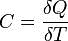
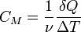
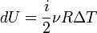
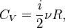
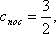
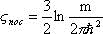

. (2.14)
. (2.14)1 Очень часто по тем или иным причинам тепловой эффект реакции не может быть определен непосредственно. В таких случаях его вычисляют из тепловых эффектов, непосредственно определенных для нескольких реакций, подобранных таким образом, чтобы, если бы они были произведены последовательно, то в результате получилось бы то превращение веществ, тепловой эффект которого требуется определить.
2) Для вычислений тепловых эффектов всевозможных реакций с помощью имеющихся уже термохимических данных пользуются расчетом по теплотам образования сложных веществ из элементов. Расчет производится на основании правила: тепловой эффект реакции равен разности суммы теплот образования продуктов реакции и суммы теплот образования веществ до реакции.
3) Основным экспериментальным методом термохимии является калориметрия. Чрезвычайно большое количество различных типов калориметров может быть отнесено к двум видам: калориметры с переменной температурой и калориметры с постоянной температурой. Все калориметры состоят из двух основных частей - калориметрической системы и калориметрической оболочки.
Расчет тепловых эффектов реакций с помощью средних энергий связей.
3. Теплоемкость идеального газа. Поступательная, вращательная и колебательная теплоемкости. Теплоемкость твердого тела. Уравнение Эйнштейна. Зависимость теплового эффекта химической реакции от температуры.
Теплоемкость идеального газа.
Из молекулярно-кинетической теории следует, что кинетическая энергия (WК) 1 моля идеального газа равна:
, (2.10)
где NA - число Авогадро, равное 6,02 1023 Дж/К.
Учитывая, что можно получить:
. (2.11)
Используя соотношение (2.8):
. (2.12)
Уравнения (2.11) и (2.12) представляют закон Дюлонга - Пти для идеальногогаза.
Если идеальный газ одноатомный, то i = 3 и тогда:
. (2.13)
Для двухатомного газа i = 5 и тогда:
. (2.14)
В случае трехатомного газа i = 6, поэтому:
СV = 3R; СР = 4R.
Идеальный газ — математическая модель газа, в которой предполагается, что потенциальной энергией молекул можно пренебречь по сравнению с их кинетической энергией. Между молекулами не действуют силы притяжения или отталкивания, соударения частиц между собой и со стенками сосуда абсолютно упруги, а время взаимодействия между молекулами пренебрежимо мало по сравнению со средним временем между столкновениями.
Теплоёмкость тела (обозначается C) — физическая величина, определяющая отношение бесконечно малого количества теплоты ΔQ, полученного телом, к соответствующему приращению его температуры ΔT.
Теплоемкость идеального газа - это отношение тепла, сообщенного газу, к изменению температуры δТ, которое при этом произошло. 
Молярная теплоемкость - теплоемкость 1 моля идеального газа.
δQ = νCΔT 
Для идеальных газов вн. энергия не зависит от объема и давления и ур-е – Ср–Сv=Р [dV/dР]р
Ср–Сv=R.
Для реальных газов Ср–Сv>R, и чем выше давление газа, тем больше будет разность теплоемкостей отличаться от R/
Для
Теплоемкость идеального газа в процессах
Адиабатический
В адиабатическом процессе теплообмена с окружающей средой не происходит, т.е. δQ=0. Следовательно, теплоемкость идеального газа в адиабатическом процессе также равна нулю: Садиаб=0.
Изотермический
В изотермическом процессе постоянна температура, т.е. dT = 0. Следовательно, теплоемкость идеального газа стремится к бесконечности:
Изохорический
В изохорическом процессе постоянен объем, т.е. δV = 0. Элементарная работа газа равна произведению изменения объема на давление, при котором происходит изменение (δA = δVP). Первое Начало Термодинамики для изохорического процесса имеет вид:
dU = δQ = CVΔT
А для идеального газаТаким образом, где i - число степеней свободы частиц газа.
Изобарический
В изобарическом процессе (P = const):
δQ = dU + PdV = νCVΔT + νRΔT = ν(CV + R)ΔT = νCPΔT
Теплоемкость, так же как и количество переданной телу теплоты, зависит от того, каким образом, а точнее при осуществлении какого процесса, теплота передавалась этому телу.
Если в процессе изменения состояния идеального газа теплоёмкость его не изменяется, то такой процесс называется политропическим. Частными случаями политропического процесса являются рассмотренные ранее изопроцессы, протекающие при постоянных значениях температуры, давления или объема.
Поступательная, вращательная и колебательная теплоемкости.
Микрочастицы (молекулы, атомы), из которых состоит газ, могут совершать, в общем случае, три типа движений: поступательное , вращательное , колебательное .
Атом как материальная точка может совершать только поступательное движение в трех направлениях (три степени свободы - i=3).
Как показано в молекулярно-кинетической теории на каждую поступательную или вращательную степень свободы каждой микрочастицы приходится энергия равная (1/2)kT (закон равномерного распределения энергии по степеням свободы). Таким образом, для одного моля газа (число микрочастиц равно числу Авогадро N), внутренняя энергия газа:
U=i(1/2)kTNА=(i/2)RT
Вращательная теплоемкость многоатомных газов. Свободную энергию многоатомного газа, как и двухатомного, можно представить в виде суммы трех частей — поступательной , вращательной и колебательной . Поступательная часть характеризуется теплоемкостью и химической постоянной, равными:  , 
Колебательная часть термодинамических величин газа становится существенной при значительно более высоких температурах, чем вращательная , потому что интервалы колебательной структуры термов велики по сравнению с интервалами вращательной структуры.
Вычисление теплоемкости сводится к вычислению средней энергии теплового движения отдельных молекул, которое складывается из поступательных ивращательных движений молекулы как целого и из колебаний атомов внутри молекулы. Молярная теплоемкость одноатомного газа равна 3R/2 (по R/2 на каждую степеньпоступательного движения молекулы). Теплоемкость многоатомного газа в общем случае может быть представлена суммой вкладов от отдельных видов движения -поступательного , вращательного , колебательного .
Поступательная теплоемкость рассчитывается так же, как для одноатомного газа. Вращательная и в особенности колебательная теплоемкости должны, как правило, вычисляться на основе квантовой статистики. Согласно классической статистике, вклады в молярную теплоемкость в расчете на одну степень свободы равны: для вращательного движения R/2, для колебательного движения R. Для большинства молекул при низких и средних температурах колебательные степени свободы вырождены и не дают вклада в теплоемкость Например, теплоемкость двухатомного газа при обычных температурах равна 5R/2. Лишь при достаточно высоких температурах возбуждаются колебания определенной частоты.
Теплоемкость твердого тела.
Твердое тело можно представить в виде огромной молекулы, состоящей из отдельных атомов. Число атомов в 1 моле равно NA, тогда общее число степеней свободы – 3 NA и выражение для расчета теплоемкости принимает следующий вид:
, (2.16)
причем СV СР.
Соотношение (2.16) – закон Дюлонга – Пти для твердых тел.
Оказалось, что для углерода, кремния и бора соотношение (2.16) не выполняется. Кроме того закон Дюлонга – Пти не учитывает температурную зависимость теплоемкости.